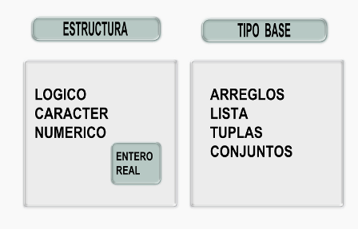

Esta obra esta protegida bajo una licencia de creative commons
Universidad de Antioquia
2010

En programación de computadores podemos definir como tipo de información una unidad básica de datos que se procesa o se almacena para una actividad en el computador (Wikipedia, 2011g).
La imagen (GALEANO, 2011f) esquematiza los diferentes tipos de datos. En primera instancia podemos distinguir los que denominamos datos base, que son en términos generales los tipos básicos que se manejan en buena parte de los lenguajes de programación. Los tipos base son los datos lógicos, los de caracteres y los numéricos.
Los tipo lógico son los que requieren sólo un BIT para almacenar su información, ya que sólo pueden tomar dos valores. En programación se refiere a su valor de diferente forma, por ejemplo Falso o Verdadero, False o True, O o 1, Si o No, etc. Este tipo de datos se utiliza en evaluaciones lógicas de decisión y también en aplicaciones de ingeniería eléctrica donde se hace alusión a contactos abiertos o cerrados. En la teoría de conjuntos, el dato de que un elemento pertenece o no pertenece, también es un tipo de dato lógico.
Los datos tipo carácter se refieren a letras o símbolos de puntuación que se utilizan para almacenar textos o instrucciones de comando o control en los computadores. Este tipo de datos puede aparecer en forma simple o como una cadena de caracteres ( en inglés string). Para almacenar este tipo de datos se requiere definir una tabla que dé la equivalencia entre el carácter determinado y su valor binario de almacenamiento; estas tablas podrían ser definidas por cualquier programador, pero para efector de intercambio universal de información, se han definido normas o estándares que ya están bastante difundidos. Uno de esos estándares lo define la organización ISO en uno de los comités que crea para la discusión y definición (ISO, 2011a) y es el denominado UCS de la sigla en inglés Universal Coded Character Set. Otra tabla conocida es la ASCII, de las siglas en inglés American Standard Code for Information Interchange, que se inicia para aplicaciones en el telégrafo y mas tarde es adoptada por la IANA del inglés Internet Assigned Numbers Authority (ASCII Table, 2011; Simonsen et ál, 2011).
Los datos tipo numérico son los usados en información de tipo aritmético que requiere realizar operaciones similares a las que realizamos los humanos con nuestro sistema numérico. Como se discutió en la sección 1.2, los seres humanos hemos estado usando un sistema numérico de base 10, usamos para su escritura 10 dígitos diferentes. De otra parte, los ordenadores digitales utilizan un sistema binario o de base 2 para la representación de los números. La referencia (Fernández et ál, 2003) presenta de forma bastante didáctica los diferentes aspectos relacionados con la representación de los números en los computadores. Por aspectos de la representación de los números en el computador, los clasificaremos en números enteros y números reales, aclarando que esta denominación de reales no corresponde a la denominación del conjunto de números reales en el análisis matemático. La representación de los números enteros mas usada es la conocida como complemento de base dos (en ingles se refieren 2’s complement representation) y es también conocido como sistema sesgado, ya que no usa directamente un BIT para la representación del signo. No se tiene un estándar para los números enteros, ya que esta prácticamente incluido en el estándar de números reales o también conocido como números de punto flotante , el estándar IEEE 754 (Wikipedia, 2011h). Este estándar define el formato aritmético de los números en el computador, incluyendo los infinitos y los conocido como no numéricos, los formatos para intercambio de números, la forma de realizar los redondeos en las operaciones matemáticas y el manejo de condiciones excepcionales, tales como división por cero y la salida del rango numérico finito del computador, conocido en inglés como overflow y underflow. Para la representación de los números se define un número fijo de BIT o BYTE según su precisión, 32 BIT para precisión simple y 64 BIT para doble precisión. Ya se tienen la posibilidad también de número arbitrario de números enteros.
El otro tipo de datos, que aparecen en la imagen (GALEANO, 2011f) como estructuras, también se denominan como tipo secundario de datos (Chawla, 2011) y dependen de las herramientas o lenguajes de programación. Este tipo está compuesto por los tipos básicos y un método de agrupación y numeración que se aplica, por ejemplo en los arreglos de tipo vectorial se suele usar números para indexar su posición. Esta forma de indexar puede variar de un lenguaje a otro y se tienen arreglos especiales donde el indexado puede ser libre. Estos tipos de estructuras pueden ser programadas por el usuario según sus propias necesidades, así que más adelante se darán los ejemplos específicos en PYTHON de las estructuras o datos secundarios que vienen en los lenguajes y cómo se puede ampliar el espectro de las estructuras disponibles.
Esta obra esta protegida bajo una licencia de creative commons
Universidad de Antioquia
2010